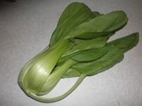

チンゲンサイの生産量 都道府県ランキング
全17都道府県の順位と収穫量
チンゲンサイの収穫量が全国で最も多いのは茨城県で、1万900 tです。全国（3万8,700 t）の28%を占めます。

| 順位 | 都道府県 | 収穫量 | 全国に占める割合 |
|---|---|---|---|
| 1位 | 茨城県 | 1万900 t | 28% |
| 2位 | 静岡県 | 6,840 t | 18% |
| 3位 | 群馬県 | 2,400 t | 6.2% |
| 4位 | 埼玉県 | 2,280 t | 5.9% |
| 5位 | 福岡県 | 2,030 t | 5.2% |
| 6位 | 愛知県 | 1,730 t | 4.5% |
| 7位 | 長野県 | 1,400 t | 3.6% |
| 8位 | 千葉県 | 1,210 t | 3.1% |
| 9位 | 沖縄県 | 781 t | 2.0% |
| 10位 | 宮城県 | 773 t | 2.0% |
| 11位 | 兵庫県 | 686 t | 1.8% |
| 12位 | 熊本県 | 633 t | 1.6% |
| 13位 | 北海道 | 595 t | 1.5% |
| 14位 | 大分県 | 436 t | 1.1% |
| 15位 | 鳥取県 | 328 t | 0.8% |
| 16位 | 徳島県 | 317 t | 0.8% |
| 17位 | 鹿児島県 | 297 t | 0.8% |
PR

チンゲンサイの生産量の推移（令和2年産〜令和6年産）
全国の収穫量は、令和2年産の4万1,400 tから令和6年産の3万8,700 tへ、7%減りました。期間中、1位は一貫して茨城県です。
| 年 | 全国 | 1位 | 2位 | 3位 |
|---|---|---|---|---|
| 令和6年産 | 3万8,700 t | 茨城県1万900 t | 静岡県6,840 t | 群馬県2,400 t |
| 令和5年産 | 3万8,700 t | 茨城県1万600 t | 静岡県7,000 t | 埼玉県2,310 t |
| 令和4年産 | 4万100 t | 茨城県1万1,100 t | 静岡県7,070 t | 愛知県2,460 t |
| 令和3年産 | 4万1,800 t | 茨城県1万1,700 t | 静岡県7,330 t | 愛知県3,010 t |
| 令和2年産 | 4万1,400 t | 茨城県1万1,800 t | 静岡県7,230 t | 愛知県2,930 t |
この数字について
- 分類：アブラナ科
- 全国の収穫量：3万8,700 t
- この数字が表すもの：収穫量（収穫された重量）
- 調査：作物統計調査 作況調査（野菜） 令和6年産
- 17県分を調査（調査していない県は順位に入りません）
チンゲンサイの生産量について、よくある質問
- チンゲンサイの生産量が日本一の都道府県はどこですか？
- 茨城県です。作物統計調査 作況調査（野菜）（令和6年産）で1万900 tでした。
- チンゲンサイの生産量ランキング2位・3位はどこですか？
- 2位は静岡県（6,840 t）、3位は群馬県（2,400 t）です。
- チンゲンサイの生産量ランキング4位・5位はどこですか？
- 4位は埼玉県（2,280 t）、5位は福岡県（2,030 t）です。チンゲンサイの全17県の順位は上の表のとおりです。
- チンゲンサイの全国の生産量はどれくらいですか？
- 3万8,700 t（令和6年産）です。
広告